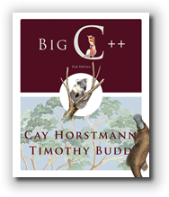

CS 150 Syllabus, Spring 2010

Hello, my name is Stephen Gilbert. Welcome to the Orange Coast College CS 150 information page.
In Spring 2010, we'll be offering two sections of CS 150, C++ Programming I. This is the syllabus only for the section that I am teaching. CS 150 is typically the second programming class for Computer Science majors who intend to transfer to a 4-year university. CS 150 (CRN# 30586) is a 16-week, lecture-only class that meets twice a week, on Monday and Wednesday afternoons, from 2:20 to 4:55 PM.
- Where and when is the course, and who's teaching?
- What does the course cover, and what do I need to do before I enroll?
- How can successfully complete the course?
- What textbook and software will I need for the course?
- Course policies concerning attendance, late work, etc.
Who, Where, and When
Let's start with the where and when. CS 150, CRN# 30586, meets in room 105 in the Clark Computing Center. (Map: building 73 in the upper-left corner, across from the softball field, by the Adams St. Parking lot.).
The class meets on Monday and Wednesday afternoon from 2:20-4:55 PM. The class consists of both lecture and discusssion, but there is no lab period, like there is in CS 140, CS 142, or CS 170. Forty-five minutes of each class session will be devoted to discussion, which will consist of these elements:
- Homework review: Each week I will go over a solution to the previous week's homework.
- Homework preview: Each week I will assign the next section's homework and answer any questions you may have about the assignment.
- Discussion problems: Each week you may be given a set of discussion problems to solve in class. You may work alone or in a group to solve the discussion problems.
You may also be called upon to present your solutions to the discussion problems to the class.
Instructor Contact Information
- Stephen Gilbert
- Office : Clark Computing Center F
- Office hours : MW: 1:15-2:15, TU: 3:15-5:15
- Email : StephenGilbert@gmail.com or sgilbert@occ.cccd.edu
- Office phone : (714) 432-0202 ext 21173
- Home page : http://faculty.orangecoastcollege.edu/sgilbert/
What is CS 150 All about?
Here's the official course description from the OCC catalog:
A first course in the ANSI/ISO Standard C++ programming language. Topics include data types, strings, operators, expressions, control flow, storage classes, input/output, functions, pointers, arrays, preprocessor, file I/O, standard library routines, function overloading, object construction and inheritance, object-oriented design and recursion.May be taken for a grade or on a credit/no-credit basis. Three and one-half hours lecture, one and one-half hours non-lecture. (Note: the non-lecture portion of this course is composed of class discussion rather than lab.)
Prerequisites
You must have successfully completed CS 115 (Pascal Programming), CS 140 (C# Programming), CS 142 (Visual Basic .NET Programming), or CS 170 (Java Programming) before taking CS 150. These are the four introductory computer programming classes at OCC.
You shouldn't try to take CS 150 concurrently with the prerequisite class. If you have taken Pascal, Visual Basic, Java, or Fortran at another college, or, if you are self-taught, you may be able to complete the course successfully. Note, though, that the Visual Basic portion of CS 111 is not sufficient preparation to succeed in CS 150.
What's CS 150 Really About?
Computer Science 150 is a course in computer programming that uses the ANSI/ISO C++ programming language to teach object oriented and structured programming techniques. Before you take this course you should already have taken another imperative programming language such as Pascal, Java, or FORTRAN.
There are several reasons why you might want to take CS 150:
- If you intend to major in Computer Science, the C++ programming is widely used as the primary language in many colleges and universities.
- If you want to learn the advanced object-oriented and generic programming features of the C++ language, you should first learn the basic syntax of C++. CS 150 gives you a solid foundation in C++ syntax, control structures, and fundamental data types.
- If you want to write high-performance programs for Microsoft Windows, it is good to know C++, even if you eventually program in Visual Basic, PowerBuilder, or Delphi. Like UNIX, MS Windows has the C/C++ language at its core.
A computer programming course really has two parts. The first part is simply learning the syntax or grammar that a particular language uses. You need to learn the specific keywords and control structures used by each language, as well as the common idioms used to express generic computer algorithms.
The second part, however, is really more interesting. At its heart, a course in computer programming is a course in thinking and problem solving. It is also a lot of fun. Fred Brooks, the father of modern software engineering, lists five reasons why programming is fun:
- Because of the sheer joy of making things. "As the child delights in his mud pie, so the adult enjoys building things, especially things of his own design."
- Because of the pleasure of making things that are useful to other people.
- Because of the fascination of building complex, puzzle-like objects. "The programmed computer has all the fascination of the pinball machine or the jukebox mechanism, carried to the ultimate."
- Because of the joy of always learning new things. Programming is ever new.
- Because of the delight of working in such a tractable medium. As Brooks
put it:
The programmer, like the poet, works only slightly removed from pure thought-stuff. He builds his castles in the air, from air, creating by exertion of the imagination...Yet the program construct, unlike the poet's words, is real in the sense that it moves and works, producing visible outputs separate from the construct itself. It prints results, draws pictures, produces sounds, moves arms. The magic of myth and legend has come true in our time. One types the correct incantation on a keyboard, and a display screen comes to life, showing things that never were nor could be.
Programming then is fun because it gratifies creative longings built deep within us and delights sensibilities we have in common with all men.
--Frederick P. Brooks, Jr, The Mythical Man Month, 2nd Ed.
Goals and Outcomes
The ANSI/ISO C++ programming language is a multi-paradigm
language. That means it can be used to write computer programs using several
different methodologies or techniques. In this course, C++ Programming I,
you will begin writing object oriented computer programs. You'll also
learn about procedural or structured programming techniques,
about the syntax and semantics of the C++ language, as well as many
of the common "idioms" used by C++ programmers, that are different than those
used in other programming languages. You will also learn how to use
pointers and employ recursion. You will also be introduced to
the C++ Standard Template Library (STL) through the string
and vector classes.
In CS 250, (C++ Programming II, the course that follows this course), you will study more advanced object-oriented and generic programming methods, as well as the more of the C++ Standard Template Library. You'll also learn to use the functional programming language Scheme and use C++ to build graphical and database applications.
To help you master these new programming techniques, you will be writing a lot of programs. Each week you will work on several discussion programs during class. You can work with other students on these discussion problems, and you may be asked to explain your solutions to the rest of the class. In addition, you will have programming assignments each week that you are expected to complete on your own.
It is important that you actually do the homework and discussion problems. In addition I encourage you to write small programs on your own to explore the language. You cannot passively absorb the material, and expect to pass the class; you must "learn by doing".
The purpose of these programming assignments—and the goals of the course—are that you:
- Understand and can apply the basic concepts of structured programming.
- Can use modern C++ programming tools to produce computer programs written in the C++ programming language.
- Understand and can apply the syntax and semantics of the C++ programming language.
- Gain experience in writing programs, thereby developing skills in program design, coding, and debugging, as well as developing critical thinking and reasoning skills.
Outcomes
Upon successful completion of the course, you will be able to:
- Apply structured and object-oriented programming techniques to solve various problems using the C++ programming language.
- Produce programs correctly using each of the different flow-of-control constructs.
- Produce programs which show an understanding of how to pass data between different modules without resorting to global variables.
- Demonstrate skills in using different forms of arrays and structures to solve problems.
- Design and implement programs that use sequential and random file concepts.
- Differentiate between the different data storage classes used in C++ programs.
- Apply the concept of structures to solve various problems.
- Compare and contrast the different fundamental data structures used in Computer Science.
I see also that CS 150 now has some Student Learning Outcomes or SLOs associated with it. For what it's worth, after completing this class you'll be able to:
- Use C++ to solve various problems that incorporate the use of correct data types, arrays, vectors, loops, branching, operators, functions, recursion, dynamic memory allocation and sequential file I/O concepts.
- Use C++ to solve various problems that use object-oriented methodology by defining classes and using inheritance and polymorphism.
How can I succeed in CS 150?
Here's the information you need to succeed in CS 150. Below you'll find information about the course workload, the exams, exercises, discussion, and homework, as well as information on how you'll be graded.
How much time will I have to spend on CS 150?
Everybody learns in different ways and at different speeds; in general though, you should plan on spending about two hours each week outside of class, for each semester unit, if you're an average student and want to receive an average (C-B) grade. For CS 150, that translates to 7 hours a week, in addition to the five hours of classroom time. (It's seven hours, instead of ten hours, because we only count the lecture portion of the class when calculating the outside workload.)
If you're a good student or you're satisfied with a lower grade, you may get by with less. If you have difficulty with the material, or if you want to receive an A in the course, you'll probably have to spend more time.
Rather than trying to get your seven (extra) hours in by staying up all night every Sunday, try to budget your time. Spend a couple hours every day, one hour reading the material, and one hour in the computer lab, or on your computer at home, working on problems. For most students, the best way to learn to program is to actually write programs. Spend time writing and running small "demo" programs to explore the behavior of what you are learning.
Reading
In the course schedule you'll find reading assignments for each week. This is a tentative schedule, but we'll follow it fairly closely.
Make sure you read the assigned material before class. The lecture portion of the class will cover the "big ideas" from each chapter, but reading ahead will serve you well because you will be reviewing material, rather than meeting it for the first time. This will also allow you to ask questions about areas that need clarification. You'll find that the lectures will not simply repeat the material in the book, but will usually present it from a different angle. If you fail to do the reading, you'll find yourself at a serious disadvantage in class.
What exams will I take?
In this class there will be six, hands-on programming exams. These will be closed-book, closed-notes, no-Internet exams where you will be asked to demonstrate your proficiency with one particular aspect of C++. The six programming exams will be:
- Fundamental Programming: Chapters 1 and 2, February 17, 5%
- Control Flow: Chapter 3, March 1, 5%
- Functions and Classes: Chapters 4 and 5, March 22, 10%
- Arrays and Vectors: Chapter 6, April 14, 10%
- Pointers and Inheritance: Chapters 7 and 8, May 1, 10%
- Streams and Recursion: Chapters 9 and 10, May 24, 10%
You will have 1 hour for each programming exam. As you can see, the first two exams are worth 5% of your grade (to give you a chance to become acclimated to the process, and because most of the material is review from your prerequisite course.) All together, the programming exams will be worth 50% of your final grade.
There will also be two written exams—one midterm and one final. The written exams are closed-notes, closed book. Each test is comprehensive, but will focus strongly on the most recently covered concepts. The midterm exam will each be worth 20% of your grade; the final is worth 30%. (50% total) If you must miss the midterm exam, the final exam will then count as 50% of your total grade.) If your final exam grade is greater than your midterm exam score, the final exam score will replace the midterm score. There will not be any makeup exams.
You are responsible for all the material presented in class and in the reading assignments (including the Advanced Topics). Just because a topic covered in the book is not discussed in class does not mean that it will not be on an exam.
The written exams will not be multiple-choice, but will require you to understand the material and use it to solve problems. You'll also need to explain different concepts to demonstrate your understanding. You will be writing code in the exams as well as reading code and indicating problems and/or its output. You will be given two hours for each written exam.
I will assign seating for all exams.
What about programming assignments?
 Learning to program is a lot like learning to play the tuba;
you'll never be any good unless you practice. To help you do
this, you'll spend most of your out of class time,
and a portion of each class period, writing programs.
Learning to program is a lot like learning to play the tuba;
you'll never be any good unless you practice. To help you do
this, you'll spend most of your out of class time,
and a portion of each class period, writing programs.
I will give several homework assignments each week, but the homework assignments will not count as part of your grade. Your assignments will be graded, however, so you can have plenty of practice for the programming exams. Here's how that will work.
- I have set up an account for each of you, using the automated Web-CAT grading system at Virginia Tech. To get the most out of this, you should complete the assignments without referring to your textbook or by getting help from your friends or on the Web. Once you have completed your assignment, submit it to Web-CAT to be evaluated.
- Your assignments will be graded based on a unit-testing framework called CxxTest. You'll learn to use this framework, and write your own unit tests, early in the semester. Each assignment will be graded based on passing a set of reference tests that I'll supply.
- Your programs should follow the coding style guidelines on page
951 of your textbook, with the following exceptions:
- You can set the tab stops to 4 instead of 3, and make sure your editor uses SPACES instead of tabs when it saves the file.
- You may use
continueandbreakbut can't usegoto. - You can't use global variables at all.
I'll go over the solutions to each assignment during the first part of the next class meeting.
Class Discussion
One of the greatest learning resources at your disposal are the other students you'll meet in this class. Take advantage of them; ask the person next to you to help you with something you don't understand, or offer to help someone else who is struggling.
To encourage you to help each other, I want you to use the online discussion area to ask all of your technical questions, instead of sending me an email message. Let's keep email for "personal" correspondence—things like "I'll be missing class this Tuesday", instead of questions like "Why do I get this error message when I compile?" If you ask these types of questions on the discussion board, you'll help all the other students who are having the same problem, but didn't think to ask. (I will answer questions posted on the discussion board, after I've given your fellow students an opportunity to respond. I also read all of the messages on the discussion board, even if I don't reply.)
I will also post class announcements and general tips in the FAQs and Announcements section of the discussion area. You should make sure you check the board regularly, (that is, several times each week), for new announcements.
How will I be graded?
You may take this course for a grade, or on a CR/NC basis. If you take the course for credit/no-credit, you must obtain a score equivalent to a "C" to get credit. (If you're transferring, though, make sure that the institution you're transferring to will accept CR/NCR; most institutions won't if it's a requirement for your major.) To receive a CR/NC grade, you have to fill out a simple form (in person) in the Admissions and Records office before the cutoff deadline.
Grades will be assigned based on the following weights:
| 6 hands-on Programming Exams | 50% |
| Written midterm exam | 20% |
| Written Final Exam | 30% |
| Class Participation/In-Class Exercises (Extra-Credit) | 5% |
Letter grades will be assigned using the following calculation:
- The average score in the class is calculated. This average is used as the "cutoff" score for a "B".
- The standard deviation is used as the "range" for each letter grade.
This is similar to a curve, but different, because the number of students in each category are not necessarily a normal distribution. In an average class this results in about 30% of the students getting As, 35% gettting Bs, 30% getting Cs and the rest Ds and Fs. (I also calculate the grades using the traditional 90, 80, 70, 60 cutoffs. In the unlikely event that this would be more advantageous to you, I will use that method.)
What textbook and software will I need?
For this Spring semester, the textbook we are using is
|
 |
Big C++ 2nd Edition by Cay Horstmann, San Jose State Univ., Timothy A. Budd ISBN: ISBN 978-0-470-38328-5 © 2009 Student Web Site containing links to the online chapters 25-27 (not needed for this class) as well as the source code for the book Author's Web Site contain links to additional information |
We'll cover the first 10 chapters of the textbook in CS 150. The rest of the book is covered in CS 250.
Software
All of the software you need to complete this course is installed on the computers in the OCC Clark Computing Center. However, many of you will want to work at home. If you work on Windows, I'll supply you with a preconfigured compiler/editor bundle that you can run on your own computer. If you work on the Mac or Linux, you'll already have the GNU compiler installed on your computer (or you can do it with the installation disks).
In class, we'll be using a plain text editor and the MinGW version of the GCC compiler. This is what you'll use to take your exams. At home you can use an IDE (like the Eclipse CDT, Visual Studio, Code Blocks, or xCode), but you'll probably do better in this course if you limit yourself to the "bare metal" tools that we use in class.
What are the "rules" for this course?
Late Work
Since none of your homework assignments are used for calculating your grade, there is no reason to turn in "late work". I will provide at least two "makeup" days for the programming exams where you can take one of the programming exams you missed, or retake one of the exams that you did poorly on. This only applies to programming exams 1, 2, 4 and 5. These makeups will take place before the midterm and before the final.
I will give you at least 5% extra-credit for submitting the in-class exercise document each week.
You must take the Final Exam to pass the course, but you do not have to the midterm to pass the class. If you miss the written midterm exam, that percentage of your exam score will just be added to the final. Also, if your percentage score on your written final exam is better than your percentage on the midterm, I'll "throw out" your midterm score, and use your final exam only for calculating the written exam portion of your final grade.
Attendance and Withdrawal
A portion (5%) of your grade is determined by your participation in the class, including discussion and completing the in-class exercises. (These are actually extra-credit points). I will take attendance, and you are expected to be in class. If you miss a class, you obviously won't get any participation points for that day. If you miss two consecutive weeks of class sessions, you may be dropped without notice. Don't assume, though, that you will be automatically dropped if you fail to come to class. It is your responsibility to withdraw from any class. If you stop attending, yet fail to withdraw, you will receive a grade of 'F'.
Please pay special attention to the OCC drop deadlines. Every semester I have students who want to drop the class after the deadline to drop has already passed. Those students end up getting an 'F' in the class if they are unable to complete the coursework. I do not give Incomplete grades.
Academic Honesty
Programming by its nature relies on learning from the work of others. You are encouraged to examine each other's code and to discuss various approaches and coding styles. You won't really learn anything, though, if you don't "try it yourself".
In this regard, discussing the general method used to solve a problem is certainly encouraged. Taking another student's source code and modifying it is really counter-productive; you learn to program by working out the programming exercises and assignments. If you don't do the assignments yourself, you won't learn how to program, and you won't be able to pass the programming exams.
When it comes to testing time, I expect you to maintain a high level of academic honesty. Cheating on exams will result in course failure.
Disruptive Behavior
You are entitled to an environment that encourages learning, as are all your fellow students. You should not behave in a manner that negatively impacts other class members. In a classroom, such behavior includes hostile behavior such as yelling and screaming, as well as interrupting other students and attempting to inappropriately dominate the classroom. In our "online classroom", disruptive behavior includes "flaming" or harassing email, as well as posting offensive material on the class discussion board.
I expect all of you to be polite, respectful, and helpful to your fellow students; in short, I expect you to act like adults should act. If, in my judgment, your behavior negatively impacts the rest of the class, you may be subject to disciplinary action.
Disabilities
If you have a disability that may impede your ability to successfully complete this course, you should contact the Disabled Student's Center (432-5807 or 432-5604 TDD) not later than the first week of the course. Their staff will assist you in arranging accommodations that can help you meet course requirements.
Reservation of Rights
I reserve the right to change this syllabus, including, without limitation, these policies, without prior notice.